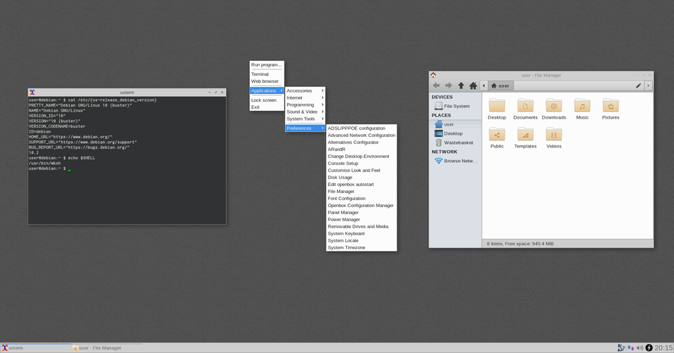

SharpBang (♯!) is a live ISO image that can be used to install a pre-configured Openbox/Tint2 desktop running on Debian stable.
The username for the live system is user and the password is live.
The live-build system is used to create the ISO, just like the official Debian images. A full suite of rescue & recovery tools are included in the live environment and a rescue mode is accessible from the boot menu which can be used to open a shell in an installed system.
Download links & sha512sum
64-bit x86 (amd64):
sharpbang-buster-0.3.2-amd64.hybrid.iso
74cdf8c1fdfbd1e981249a5b2674aa9a87c51e3f350cea242ebb15390b4e433754790985ccece4a27284f3e6ba71fa7bd1d69b7f58739b080e08d14ba51885a4
32-bit x86 with PAE (i386):
sharpbang-buster-0.3.2-i386.hybrid.iso
f4097e716abfca8eac5d2bc324a2f757bb820dda4befcc488d520aa0818541628d7f50ec7934ab45ba83c9324f855b9d885110336f1961481bb79da862ae26e8
Booting the image
Use cp to transfer the image to a USB stick, for example:
cp sharpbang-buster-0.3.2-amd64.hybrid.iso /dev/sdX ; sync
Replace X with the letter assigned to the USB stick, do not add a partition number.
Hard drive GRUB entry
To add a GRUB boot menu entry for the ISO copy the image to /usr/share/sharpbang/sharpbang.iso then create a file at /boot/grub/custom.cfg with this content:
menuentry 'SharpBang (live) {
isofile=usr/share/sharpbang/sharpbang.iso
loopback loop (hd0,1)/$isofile
linux (loop)/live/vmlinuz boot=live config fromiso=/dev/sda1/$isofile toram
initrd (loop)/live/initrd.img
}
Replace hd0,1 & sda1 with the correct identifiers for your disk.
Miscellaneous Links
Sid's page
Last altered: 2019-10-30@18:23GMT